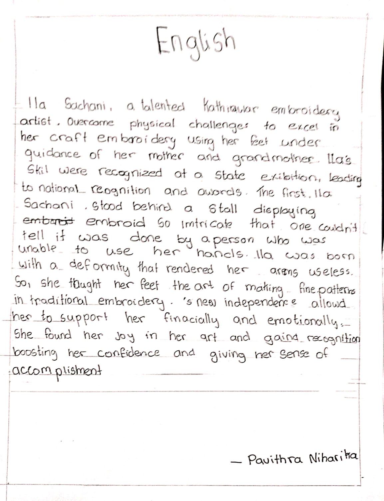

Welcome to ENGLISH page
| ENGLISH PAGE |  |
|---|---|
| English topic description: |
Ila Sachani, a talented Kathiawar embroidery artist, overcame physical challenges to excel in her craft. She learned embroidery using her feet under the guidance of her mother and grandmother. Ila's skills were recognized at a state exhibition, leading to national recognition and awards. The first, Ila Sachani, stood behind a stall displaying embroidery so intricate that one couldn't tell it was done by a person, who is unable to use her hands. Ila was born with a deformity that rendered her arms useless. So, she taught her feet the art of making fine patterns in traditional embroidery.'s new independence allowed her to support herself financially and emotionally. She found joy in her art and gained recognition, boosting her confidence and giving her a sense of accomplishment. |